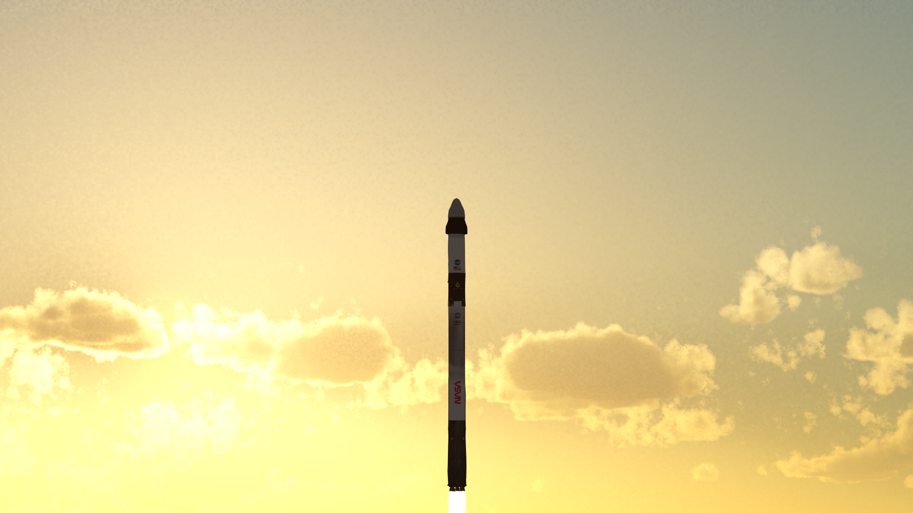
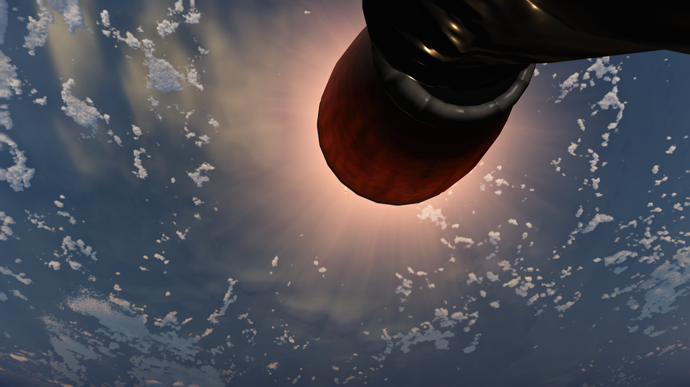
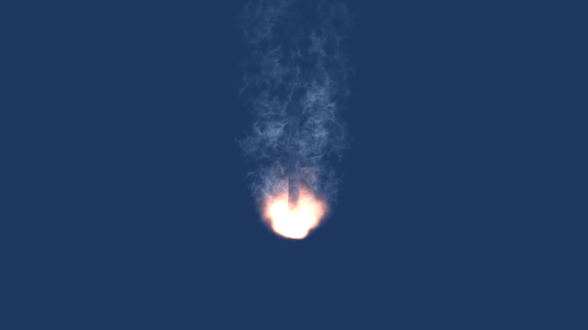
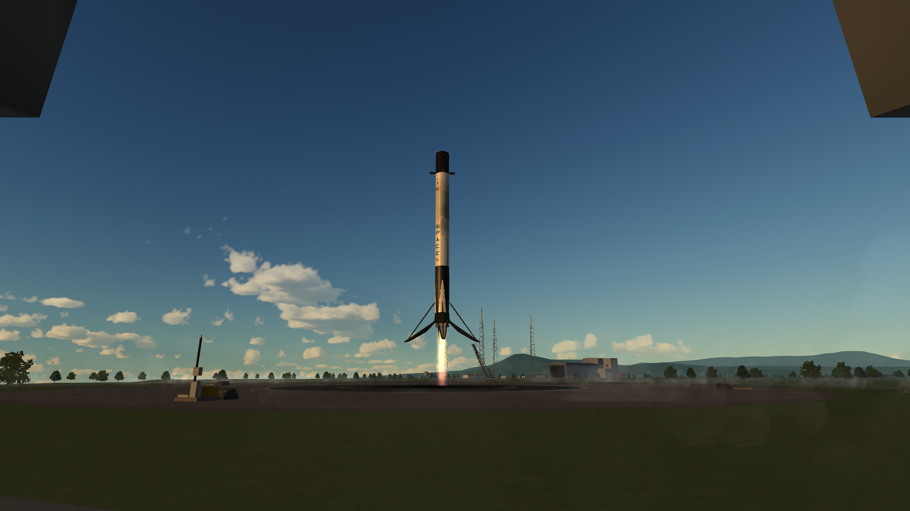
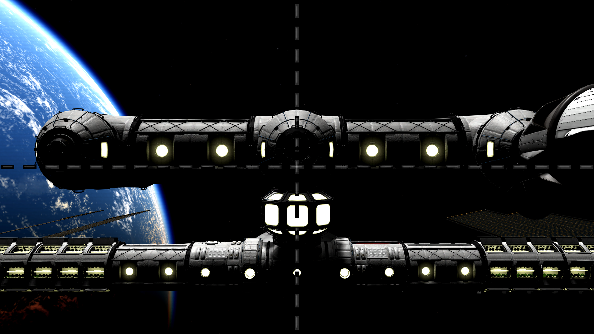

CRS-2
Vehículo: Falcon 9 Block 5
Propulsor: B1075
Fecha: 18 de abril de 2025
Estado: Éxito

Introducción
Halcon Space lanzó con éxito la misión de reabastecimiento CRS-2, transportando una capsula Dragon equipada con multiples experimentos y carga útil a la Estación Espacial Internacional. La primera etapa B1075 fue recuperada con éxito sobre LZ-1 (Zona de Aterrizaje 1).
Detalles Técnicos
- Vehículo: Falcon 9 Block 5
- Altura del cohete: 70 m
- Propulsor: B1075.1
- Carga útil: Cargo Dragon
- Órbita: ISS, 407 km
- Recuperación: Éxito sobre LZ-1 "Zona de Aterrizaje 1".
Imágenes de la misión




